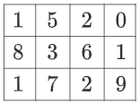

v.
Overview
- Useful Python libraries and packages for data science
- Towards Machine Learning for the next study block
Approaches of Creating AI
- Symbolic approaches:
- rule-based expert systems
- intelligent forms of search
- constraint-based approaches
- etc.
- Statistical approaches:
- machine learning (ML)
- neural nets: NN, CNN, GAN, ...
- data mining
- etc.
Useful Libraries for Machine Learning
NumPy: offers efficient mathematical functions to deal with large, multi-dimensional array calculationsScipy: enhances NumPy's scientific capabilities by providing additional functionalities for optimisation, statistical tasks, and more.Pandas: an intuitive and powerful data manipulation, modelling and analysis library for structured dataMatplotlib: a comprehensive 2D/3D plotting and data visualisation library for Python- Various libraries for machine learning like
PyTorchandTensorFlow, which will be covered in COMP714
NumPy
- Open-source, high-performance mathematical library
- Support Matlab-like N-D arrays
- Active community and fast iterations
- Can be installed via:
pip install numpyor other $\qquad \qquad$
environment/package management tools likeconda
Why NumPy?
- high-level syntax of common operations
- easy to handle large amount of "homogeneous" (same-type) data
- - vs. Python's "heterogeneous" capability
- fast N-D array manipulation
- reduced memory consumption
Array using Python List
- How do you represent this array in Python using
list?arr = [[1,5,2,0],[8,3,6,1],[1,7,2,9]] len(arr) # 3 len(arr[0]) # 4 - How to access item using two list indices?
arr[1][2] # 6
Array in NumPy
- How do you represent this array in NumPy using
array?arr = numpy.array([[1,5,2,0],[8,3,6,1],[1,7,2,9]]) len(arr) # 3 arr.shape # (3,4) - How to access item using two list indices?
arr[2,1] # 7
NumPy Built-in Functions
import numpy as np
a = np.zeros((2,2)) # Create an array of all zeros
print(a) # Prints "[[ 0. 0.]
# [ 0. 0.]]"
b = np.ones((1,2)) # Create an array of all ones
print(b) # Prints "[[ 1. 1.]]"
c = np.full((2,2), 7) # Create a constant array
print(c) # Prints "[[ 7. 7.]
# [ 7. 7.]]"
d = np.eye(2) # Create a 2x2 identity matrix
print(d) # Prints "[[ 1. 0.]
# [ 0. 1.]]"
e = np.random.random((2,2)) # Create an array filled with random values
print(e) # Might print "[[ 0.91940167 0.08143941]
# [ 0.68744134 0.87236687]]"Array Maths
import numpy as np
x = np.array([[1,2],[3,4]], dtype=np.float64)
y = np.array([[5,6],[7,8]], dtype=np.float64)
# Element-wise sum; both produce the array
# [[ 6.0 8.0]
# [10.0 12.0]]
print(x + y)
print(np.add(x, y))
# Element-wise difference; both produce the array
# [[-4.0 -4.0]
# [-4.0 -4.0]]
print(x - y)
print(np.subtract(x, y))
# Element-wise product; both produce the array
# [[ 5.0 12.0]
# [21.0 32.0]]
print(x * y)
print(np.multiply(x, y))
# Element-wise division; both produce the array
# [[ 0.2 0.33333333]
# [ 0.42857143 0.5 ]]
print(x / y)
print(np.divide(x, y))
# Element-wise square root; produces the array
# [[ 1. 1.41421356]
# [ 1.73205081 2. ]]
print(np.sqrt(x))Note: the * is different from Matlab - it is element-wise multiplication!
For matrix multiplication, you have to use dot function!
Further Reading
SciPy
- Scientific Computing Library: an open-source Python library $\qquad$
widely used in scientific computing, engineering, data analysis - Built on NumPy: built on top of NumPy, extends its capabilities
- Modules for Diverse Applications: provides modules such as
scipy.optimizefor optimisation and root-finding,scipy.integratefor numerical integration,scipy.linalgfor linear algebra operations, andscipy.signalfor signal processing - Interoperability: works seamlessly with other scientific Python libraries like
Matplotlibfor plotting andNumPyfor numerical computations - Community-Driven: developed and maintained by a community of contributors
Curve Fitting using SciPy
from scipy import optimize
import matplotlib.pyplot as plt
x_data = np.linspace(-5, 5, num=50)
y_data = 2.9 * np.sin(1.5 * x_data) + np.random.normal(size=50)
fig, ax = plt.subplots(dpi=153)
def test_func(x, a, b):
return a * np.sin(b * x)
params, params_covariance = optimize.curve_fit(test_func, x_data, y_data, p0=[2, 2])
print(params)
ax.scatter(x_data,y_data)
ax.plot(x_data, test_func(x_data,params[0], params[1]), c='r')
plt.show()Interpolation
import matplotlib.pyplot as plt measured_time = np.linspace(0, 1, 10) noise = (np.random.random(10)*2 - 1) * 1e-1 measures = np.sin(2 * np.pi * measured_time) + noise fig, ax = plt.subplots(dpi=153) ax.scatter(measured_time, measures) # Blue dots # Interpolation time from scipy.interpolate import interp1d interpolation_time = np.linspace(0, 1, 50) linear_interp = interp1d(measured_time, measures) linear_results = linear_interp(interpolation_time) cubic_interp = interp1d(measured_time, measures, kind='cubic') cubic_results = cubic_interp(interpolation_time) ax.plot(interpolation_time, linear_results, c='r', label='linear results') ax.plot(interpolation_time, cubic_results, c='g', label='cubic results') ax.legend() plt.show()

SciPy and Matlab
- SciPy provides some similar functions (almost identical names) as Matlab for image processing and scientific computations
- SciPy can read/write Matlab
.matfile usingscipy.io.loadmatandscipy.io.writemat - SciPy includes a multidimensional image processing package
scipy.ndimage - Scipy Reference
- Scientific Python Lectures
- SciPy Cheat Sheet
SciPy Sub-packages
- File input/putput:
scipy.io - Special Function:
scipy.special - Linear Algebra Operation:
scipy.linalg - Optimisation and fit:
scipy.optimize - Statistics and random numbers:
scipy.stats
- Interpolation:
scipy.interpolate - Numerical Integration:
scipy.integrate - Fast Fourier Transformations:
scipy.fftpack - Signal Processing:
scipy.signal - Image Manipulation:
scipy.ndimage
Pandas
- Pandas is a fast, powerful, flexible and $\qquad\qquad\qquad\qquad\qquad\qquad$
and easy to use open source - Data analysis and manipulation tool
- Provides 2 primary data structure: 1D
Seriesand 2DDataFrame - Powerful I/O tools that support various file formats like
CSV, Excel, JSON, SQL, and more - Allows for easy filtering, selections, and indexing of data
Pandas Series
import pandas as pd
a = [1, 7, 2]
myvar = pd.Series(a)
print(myvar)0 1
1 7
2 2
dtype: int64Pandas Data Labels
import pandas as pd
a = [1, 7, 2]
myvar = pd.Series(a, index = ["x", "y", "z"])
print(myvar)x 1
y 7
z 2
dtype: int64Pandas DataFrame
import pandas as pd
mydataset = {
'cars': ["BMW", "Volvo", "Ford"],
'passings': [3, 7, 2]
}
myvar = pd.DataFrame(mydataset)
print(myvar) cars passings
0 BMW 3
1 Volvo 7
2 Ford 2myvar.loc[[0, 1]] can be used to access rows
Reading Other Formats
import pandas as pd
df = pd.read_csv('data.csv')
print(df.to_string())Reading from CSV file
Duration Pulse Maxpulse Calories
0 6 110 130 409.1
1 6 117 145 479.0
2 6 103 135 340.0
...
166 60 115 145 310.2
167 75 120 150 320.4
168 75 125 150 330.4Reading Other Formats (2)
import pandas as pd
df = pd.read_json('data.json')
print(df.to_string())Reading from JSON file
Duration Pulse Maxpulse Calories
0 6 110 130 409.1
1 6 117 145 479.0
2 6 103 135 340.0
...
166 60 115 145 310.2
167 75 120 150 320.4
168 75 125 150 330.4More Information about Pandas
Matplotlib
- A powerful Python library for creating static, animated,
interactive, and publication-quality visualisations - Support wide range of plots such as
line plot, bar chart,, and more
histogram, scatter plot, pie chart, heatmap, 3D
plot - Multiple interface: MATLAB-like interface through
pyplot, or object-oriented interface that has more control and customisations - Interoperability: seamlessly integrates with other libraries like
NumPy, Scipy, and Pandas - Integration: works well within
JupyterLab(notebook) and Graphical User Interface (GUI)
More Information about Matplotlib
JupyterLab
- A web-based and interactive computing environment
- Has a classical interface called Jupyter Notebook
- Supports over 40 programming languages including Python, R,
Julia, Scala, and others - Extensible and Customizable: supports extensions and customisations to the interface with themes, shortcuts, and add-ons.
TensorFlow
- an open-source machine learning framework by Google
- enables scaling from single CPU or GPU to distributed computing
across multiple devices and servers - supports a range of machine learning tasks: neural nets, regression, classification, clustering, and reinforcement learning
- has an integrated visualisation tool - TensorBoard - to visualise model graphs, plot quantitative metrics about the execution of models, and view histograms of activations and gradients
PyTorch
- a flexible and Pythonic framework for machine learning
and deep learning - is known for its dynamic computation graph mechanism
-TensorFlowis static - NumPy-like tensor operations for easy manipulation and computation on multi-dimensional arrays
- the
autogradpackage provides automatic differentiation, allowing efficient gradients calculation - seamlessly integrates with CUDA and supports GPU acceleration
- has
TorchScriptfor model serialisation and deployment
Questions?